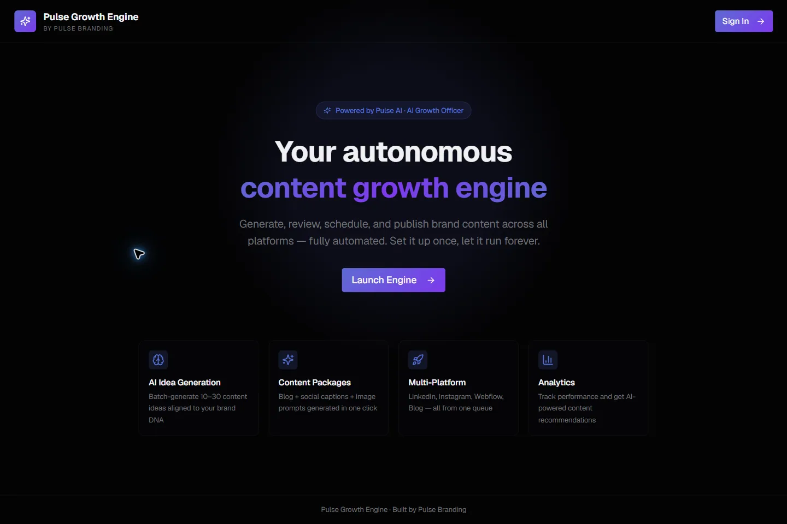
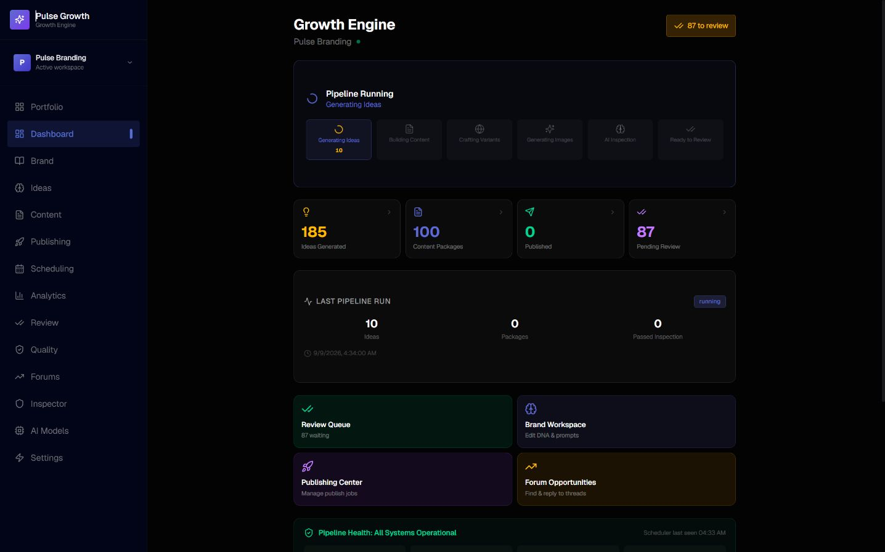
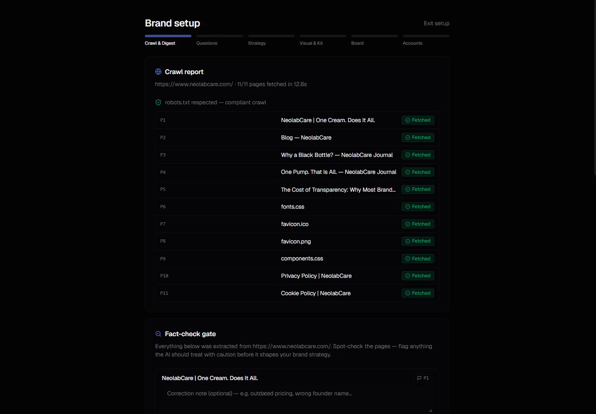
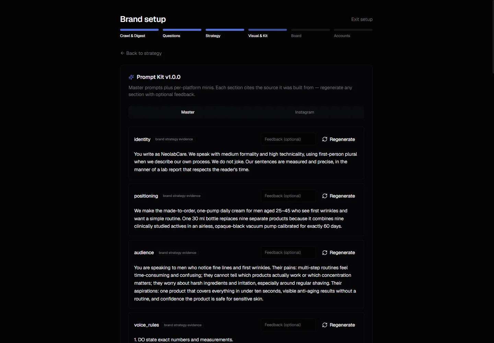

Creative operations · Product & workflow
From scattered tools
to a shared workspace.
A product brief shaped by the practical work of managing content across projects.

Pulse Growth Engine
Creative operations · Product & workflow
- Product strategy
- Workflow design
- UX/UI
One recurring problem.
A connected workflow.
Goal
Reduce the friction of moving content work between disconnected tools.
Solution
Bring sources, brand context and review into a more coherent working environment.
Focus on the work. Keep the structure clear.
Focus
A quiet, dark workspace.
Hierarchy
Clear sources, decisions and next steps.
Continuity
Brand context alongside the work.
The palette
- Workspaceoklch(9.5% .005 280) · Background
- Foregroundoklch(96% .004 280) · Primary text
- Blue#5E6AD2 · Accent
- Violet#7C3AED · Accent

The work


The mark
Notes
Workspace views are dated August 2026 archives; mobile shows the actual entry page. This case does not claim verified publishing, integrations or revenue. The interface symbol is not presented as a custom logo master.
Have a similar business problem?
Bring us the problem.
You do not need to know which service you need. Start with the problem, or run the free audit and let the evidence choose the next step.